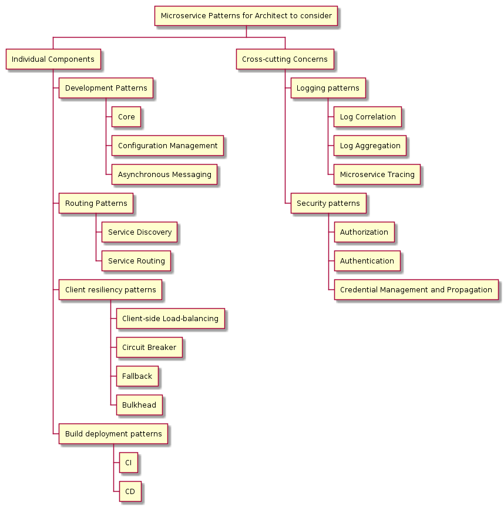

Two Microservice Tech Stacks: Netflix vs K8S + Istio
- Author: Damon Yuan
- Date: 2020-02-12
Microservice is complex.
Many articles simplify the complexity of microservice architecture to something that dividing a monolithic application into smaller pieces which owns its own domain, and each of them talks to others via some communication protocol. It's helpful for layman to grasp the basic concepts and feel the benefits it will bring - smaller application, easier development, and faster delivery, however sometimes it also covers the complexity behind it.
The Patterns
IMHO, the microservice architecture patterns at least include the following aspects,

| Pattern | Description |
|---|---|
| Core | which language, which framework to use |
| Configuration Management | how to manage the configuration and reflect the changes in deployment |
| Asynchronous Messaging | how to deliver asynchronous message |
| Service Discovery | how to discover a service in the distributed cluster |
| Service Routing | how to manage the incoming and outgoing traffic in a traceable manner |
| Client-side Load Balancing | a service is normally backed by serveral app instances, server side proxy will inevitably introduce a single point of failure because all the traffic to the service has to go through it. The way to solve it is to use a client-side load-balancing to distribute the traffic to the service instances from the client side and with the predefined poliy |
| Circuit Breaker | if an upstream service is down, should its clients keep retrying until all the thread resource is exhausted and the client also becomes irresponsibe? It's clear that the answer is no, and circuit breaker helps the client to trip off the connection for a while to protect it from being dragged into the same mire if it find that the target service has some problems. It will also poll the upstream service to check if it's back and functional every several secs / mins. If yes, it will recover the connection when possible. |
| Fallback | fallback to some other endpoints / error messages / solutions if something wrong with the upstream service |
| Bulkhead | a bulkhead is an upright wall within the hull of a ship or within the fuselage of an aeroplane. It devides functional areas into smaller rooms and create water tight compartments that can contain water in case of a hull breach or other leak. The bulkhead pattern in the microservice architecture will divide the threads of a client service into isolated pools based on the number of its consuming services. If one of its consuming service is down, it will only possibly use up the threads in the pool dedicated to that upstream service and prevent it from being taken down because of out of resource. |
| CI | compile, testing, building ans storage |
| CD | deployment |
| Log Aggregation | collect metrics & logs from distributed nodes and services |
| Log Correlation and Tracing | correlate the logs to trace the requests so that an user's behavior can be reproduced |
| Authentication & Authorization | secure the cluster |
| Credential Management and Encryption | how to manage the credential that should be unaccessible from unauthorized folks |
If all these still cannot demonstrate the complexity of the microservice architecture, read this -> Back to Microservice with Istio. Lucky that I'm not the only person who has this feeling.
The Comparison
In Netflix Stack, most of the patterns mentioned above are implemented as a lib or a framework, and the developers will need to directly provision the service, integrate the library, and customize the code in the application. In Kubernetes + Istio solution, the sidecar pattern is used so that the application can be deployed into the cluster as normal application without knowing the details of patterns in microservice architecture - all those are taken care by Istio.
| Patterns | Netflix | K8S + istio |
|---|---|---|
| Core | SpringBoot | any language, any framework |
| Configuration | Spring Config | K8S ConfigMap & Secret |
| Asynchronous Messaging | Spring Cloud Stream | any messaging engine / provider |
| Service Discovery | Spring Cloud Eureka | K8S Service + Istio VirtualService + Istio DestinationRule |
| Service Routing | Spring Cloud Gateway | Istio Ingress / Egress |
| Client-side Load-balancing | Ribbon + Feign | Istio Envoy |
| Circuit Breaker | Hystrix | Istio Envoy |
| Fallback | Hystrix | No, Envoy will return the error code the the application need to handle it |
| Bulkhead | Hystrix | No, but K8S resource limit can mitigate it |
| CI | any, normally Jenkins | any, normally Jenkins |
| CD | any, normally Jenkins | any, but more options, eg., K8S native, Spinnaker, Helm, Kustomize |
| Log Aggregation | Spring Cloud Sleuth | Istio |
| Log Correlation and Tracing | Spring Cloud Sleuth + Zipkin | Istio and many plugins, by default Prometheus + Grafana |
| Authentication & Authorization | Spring Cloud Security + OAuth2 / JWT | Istio Security |
| Credential Management and Encryption | Spring Cloud Security | K8S Secret + plugins |
Last but not the least, the relationship between K8S and Istio is not "either... or...", it is "both... and..." - we can setup the istio in a cluster while with istio's functions disabled/enabled in different namespaces. The backward compatibility has been carefully considered by Istio engineer and we can test and migrate it slowly without breaking the functions of the services.